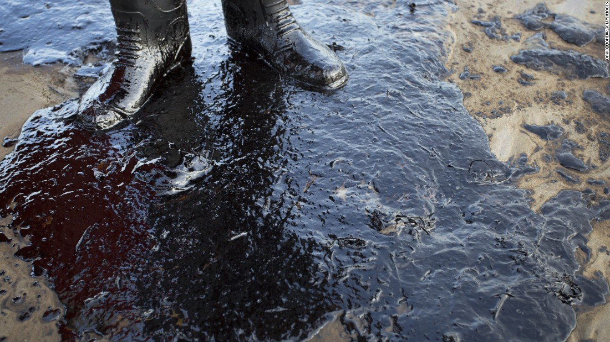

Marine pollution is the spreading of harmful substances such as oil, plastic, industrial waste, and chemicals in the ocean. As we know the ocean is home to many different marine animals and plants, marine pollution plays a huge part in threatening the health of these species. We need to make sure that the ocean is clean in order for these species to thrive.

1. Effect of Toxic Wastes On Marine Animals
Oil spills and other chemicals are dangerous to marine life is many ways. For example, the oil spilled in the ocean could get on to the feathers of marine animals, which makes it difficult for them to move/fly, resulting in their deaths. The long term effect on marine life can include: cancer, failure in the reproductive system, and most importantly, death.
2. Effect on Food Chains
The chemicals used in industries get washed into the rivers, and from there, the chemicals are carried to the oceans. Most of these chemicals do not get dissolved and sink at the bottom of the ocean, causing small animals to mistaken these chemicals as food. Then, the larger animals ingest these smaller animals, and then the humans eat the larger animals, which affects the whole food chain.
3. The Disruption to the Cycle of Coral Reefs
Once an oil spill happens, the oil usually floats on the surface of the water and prevents sunlight from penetrating through. This affects the whole process of photosynthesis on marine plants.